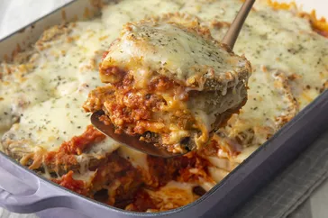

Eggplant Parmesan

Description
This easy eggplant Parmesan recipe has layers of crispy, breaded eggplant slices that have been baked, instead of fried.
The combination of crunchy bread crumbs, tomato sauce, mozzarella, and Parmesan cheese is guaranteed to please!
Ingredients
- 3 large eggplant, peeled and thinly sliced
- 2 large eggs, beaten
- 4 cups Italian seasoned bread crumbs
- 6 cups spaghetti sauce, divided
- 1 (16 ounce) package mozzarella cheese, shredded and divided
- ½ cup grated Parmesan cheese, divided
- ½ teaspoon dried basil